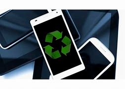

Os celulares são coletados de várias fontes, como pontos de coleta de reciclagem, programas de recompra de dispositivos, empresas de reciclagem eletrônica e operadoras de telefonia móvel. Os dispositivos podem ser doados, revendidos ou enviados diretamente para instalações de reciclagem.
Os celulares coletados são classificados com base em sua condição. Alguns podem estar em bom estado e podem ser recondicionados para revenda, enquanto outros podem ser destinados à reciclagem de materiais.
Os dispositivos são desmontados manualmente ou com o auxílio de máquinas para separar os componentes. As baterias, placas de circuito, telas, câmeras e outros elementos são removidos cuidadosamente.
Os componentes desmontados são processados para recuperar materiais valiosos. Por exemplo, as placas de circuito contêm metais preciosos, como ouro e prata, que podem ser extraídos por meio de métodos químicos ou térmicos. As baterias também são tratadas separadamente para recuperar metais como lítio, cobalto e níquel.
Os componentes restantes que não são passíveis de recuperação são descartados de maneira ambientalmente responsável. Eles podem ser encaminhados para aterros sanitários ou submetidos a processos de destruição controlada para evitar a liberação de substâncias tóxicas.
Os materiais recuperados são geralmente vendidos para empresas de reciclagem especializadas, que os utilizam na produção de novos dispositivos eletrônicos. Isso reduz a necessidade de extrair e processar novos recursos naturais.
Além disso, alguns programas de reciclagem de celulares também se concentram na reutilização de dispositivos funcionais. Nesses casos, os celulares são apagados, restaurados e revendidos como dispositivos usados ou doados para organizações sem fins lucrativos.